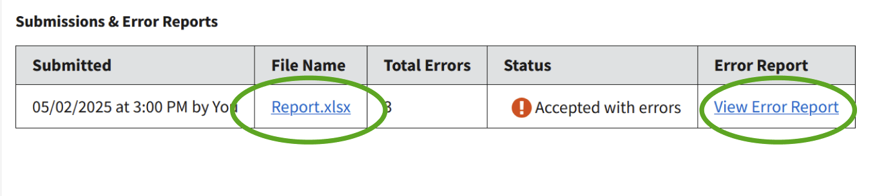

Understanding FRA Error Reports and File Structure
Error reports are generated for each file you submit when TDP detects potential data quality issues in your file. These can range from issues with the file layout (which can prevent TDP from being able to fully process your files) to issues related to specific records in your file.
This guide provides instruction on how to access, understand, and address issues listed in your error reports.
Please note: The error reports were designed to help you to correct a wide variety of data issues but do not necessarily capture every possible data quality issue. TDP's data team may still reach out to you via email with additional feedback.
Jump to:
Download and View Error Reports
Error reports can be accessed from the FRA Data Files page by navigating to the Submission History section for a given reporting period. Read more about accessing Submission History.
To access error reports for submitted files, select the link in the ‘Error Report’ column to download error feedback associated with the relevant version of the file.
{kind=link}
Data File Structure
The FRA Work Outcomes of TANF Exiters report should be in either .csv or .xlsx format and made up of two columns of data: exit date (in YYYYMM format) and social security number (including no spaces, dashes, or other non-numeric characters). The submission file should only include the data above; not file headers, footers, column labels, or other information. For further guidance, please refer to the ACF resources below:
Overview of the Error Report
TDP's error reports are designed to provide you with key information you may need to quickly identify records that have been flagged for data quality issues.
The error report has four columns:
- Exit Date — Formatted in YYYYMM.
- SSN — The last 4 digits are displayed if the number is potentially valid.
- Row Number — Identifies which row of the file you submitted contains the record associated with a given error.
- Error Description — Describes the error and key details to assist in correcting it.
{kind=link}
Examples of Common Errors
Below are examples of error messages associated with common issues that may be listed in an error report.
Some error messages that you may encounter in error reports are still in development and may have been listed incorrectly or need further clarity. Please feel free to reach out to tanfdata@acf.hhs.gov with questions or requests for additional guidance. We continuously update the system based on user feedback and encourage you to reach out if you encounter any confusing errors or believe the system incorrectly identified an issue.
- File errors
If a file doesn't adhere to official instructions in layout and content it will likely result in this error. Frequent causes include:
- Files beginning with a blank row or header row instead of the first data row
- Files with hidden and/or extra columns
- Files uploaded in .xlsx format with exit dates stored in a date format column rather than a numeric column
File does not begin with FRA data.
We're sorry, an unexpected error has occurred and the file has been rejected. Please contact the TDP support team at TANFData@acf.hhs.gov for further assistance. - Exit Date Errors
If an exit date in your report falls outside of the fiscal period you selected in TDP, it will result in an error. Similarly, if an exit date contains too few, too many, or unexpected characters it too will generate an error.
Exit date (202413) is not valid. Date must be in the range of 2025 - Q1 (Oct-Dec). - Social Security Number Errors
If a social security number contains too few, too many, or non-numeric characters it will result in an error. Additionally, each potentially valid social security number should only be associated with one exit date within a single month. Multiple instances of 999999999 within a single month will not be flagged as duplicate SSN errors.
Social Security Number (SSN) is not valid. Check that the SSN is 9 digits, does not contain only zeroes in any one section, and does not contain dashes or other punctuation. Enter 999999999 if an individual does not have an SSN.
Duplicate Social Security Number within a month. Check that individual SSNs within a single exit month are not included more than once.